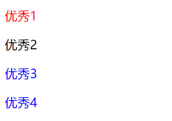
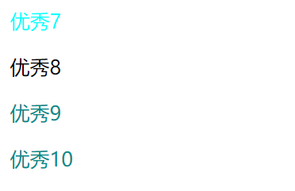
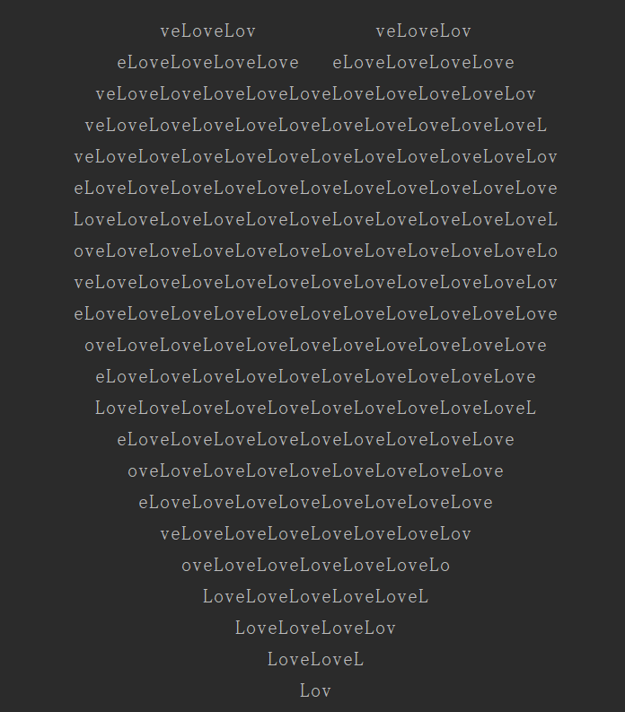

原文出处:本文由博客园博主心悦君兮君不知-睿提供。
原文连接:https://www.cnblogs.com/ruigege0000/p/11223611.html
原文连接:https://www.cnblogs.com/ruigege0000/p/11223611.html
一、格式
标签[属性=值]：{属性：值；}
1.属性的取值是以什么开头的
attribute |= value(CSS2)
attribute^=value(CSS3)
两者之间的区别：CSS2中只能找到value开头，并且value是被-和其他内容隔开的；CSS3中只要是以value开头的都可以找到，无论有没有横线隔开的
p[id|=abcd]{color: red;}
p[id^=bcd]{color:blue;}
........省略代码.........
<p id="abcd-efg">优秀1</p>
<p id="abcdefg">优秀2</p>
<p id="bcd-efg">优秀3</p>
<p id="bcdefg">优秀4</p>
2.属性的取值是以什么结尾的
attribute$=value(CSS3)
p[id$=efgh]{color: green;}
........省略代码.........
<p id="abcd-efgh">优秀5</p>
<p id="abcdefgh">优秀6</p>

3.属性的取值是否包含某个特定的值
attribute~=value(CSS2)
attribute*=value(CSS3)
两者之间的区别：CSS2中只能找到value开头，并且value是被空格和其他内容隔开的；CSS3中只要是以value开头的都可以找到，无论有没有横线或者空格隔开的
p[id~=cdoe]{color:aqua}
p[id*=cdp]{color:darkcyan}
.......省略代码.........
<p id="ab cdoe fg">优秀7</p>
<p id="abcdoefg">优秀8</p>
<p id="ab cdp efg">优秀9</p>
<p id="abcdpefg">优秀10</p>

4.
python使用一行代码来实现”心形“函数
print('\n'.join([''.join([('Love'[(x-y) % len('Love')] if ((x*0.05)**2+(y*0.1)**2-1)**3-(x*0.05)**2*(y*0.1)**3 <= 0else' ') for x in range(-30, 30)]) for y in range(30, -30, -1)]))

二、源码：
d80_attribute_selector_2.html
地址:
https://github.com/ruigege66/HTML_learning/blob/master/d80_attribute_selector_2.html
2.CSDN：https://blog.csdn.net/weixin_44630050（心悦君兮君不知-睿）
3.博客园：https://www.cnblogs.com/ruigege0000/
4.欢迎关注微信公众号：傅里叶变换，后台回复“礼包”获取Java大数据学习视频礼包